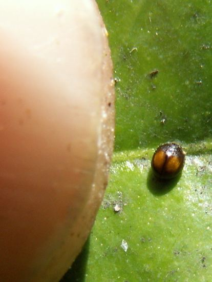
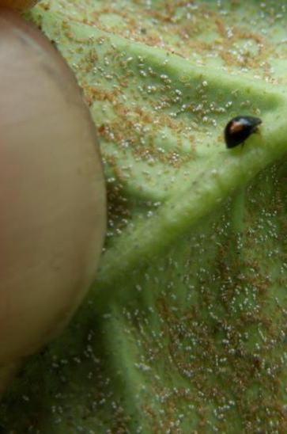
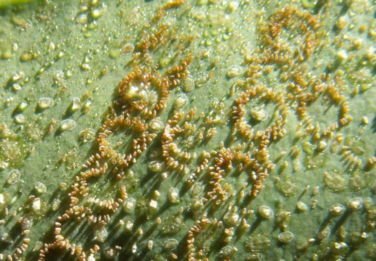
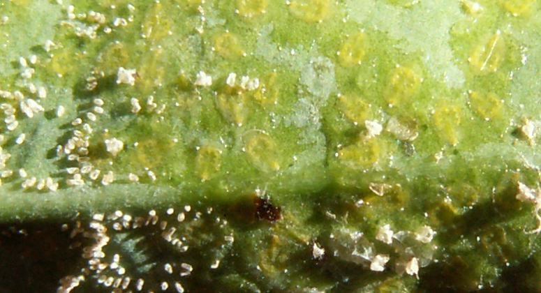
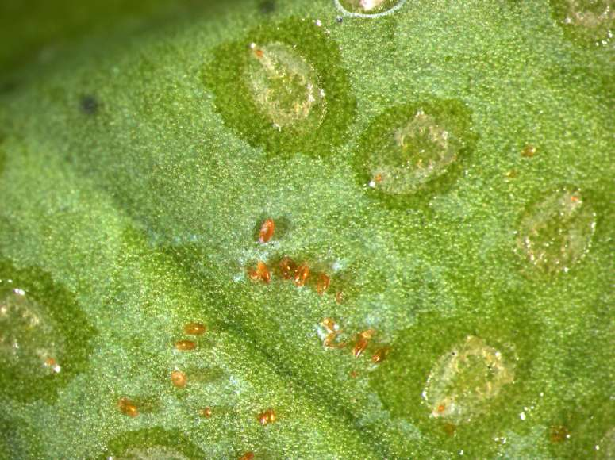

Serangium
maculigerum
Whitefly predator new to New Zealand
 
Serangium
maculigerum feeding on Citrus whitefly, Auckland December
2006
Serangium maculigerum
is a
ladybird beetle measuring only 2mm in length, which preys on whitefly.
This predator was first recorded in New Zealand in "Biosecurity" issue
62 September 2005.
It is now widespread in Auckland and Kerikeri. I found it easily during
December 2006 near central Auckland feeding on citrus whitefly.
This is significant because Serangium is the first predator of whitefly
I know of
in New Zealand. Serangium species are used worldwide as biocontrol
agents for whitefly and are reared commercially.
Whitefly in New Zealand
Greenhouse
whitefly,
Trialeurodes
vaporariorum
The parasite Encarsia
formosa parasitises Trialeurodes
vaporariorum.
It will also parasitise cabbage
whitefly and silver leaf whitefly.
Greenhouse whitefly is a serious problem for Tamarillo growers, and E.formosa does not control this whitefly
in Tamarillos.
Sweet potato whitefly, Bemisia
tabaci
When B. tabaci was first found
in New Zealand it was thought to be sweet potato whitefly, B. tabaci
(poinsettia strain or strain B). However, this is not certain. B. tabaci
strain B is now also called B. argentifolii. This species or strain
has a wider host range (including tomatoes and vegetable brassicas),
causes
physiological disorders in plants and can transmit viruses and a high
tendency
to express resistance to pesticides.
Only a few pesticides are known to give
effective control in New Zealand. Overseas, Encarsia formosa
can control Bemisia in some ornamental greenhouse
crops. However I understand E.formosa does not control B.tabaci in New Zealand.
"Biosecurity" issue 70 September 2006 records Bemisia
tabaci
biotype Q present in New Zealand. This Q biotype is resistant to all
chemicals and has the potential to become a serious pest in New Zealand.
Citrus whitefly, Orchamoplatus
citri is an
Australian species, first discovered in Henderson,
Auckland in October 2000. It is now present in Kerikeriand Gisborne. It is a
serious pest of citrus in New Zealand.
Eucalyptus whitefly Aleuroclava eucalypti is found on Eucalyptus,
especially juvenile Southern Blue Gums such as
E.nitens
and
E.globulus.
Is there industry understanding and interest in biocontrols?
Within one
season of it establishing in Kerikeri there appears to be considerably less whitefly damage to these
trees.
Overseas, Serangium
spp. are mass reared for biological control of whitefly. Rearing Serangium
on a
range of whitefly infested crops grown under insect-proof
netting, along with supplemental artificial diets, could
be trialled. Is there industry interest ?
My
interest is in sustainable production systems. Contact details: Dean Satchell, RD1
Kerikeri, Northland 0294, New Zealand
dsatch@xtra.co.nz (09) 4075525
(021)2357554

Citrus whitefly eggs laid in circles on the leaf
surface, and the young "whitefly scales" with
a protective coating of slime.

Remains of egg shells, and plenty of whitefly scales, which appear very wide and
flat.
